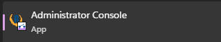
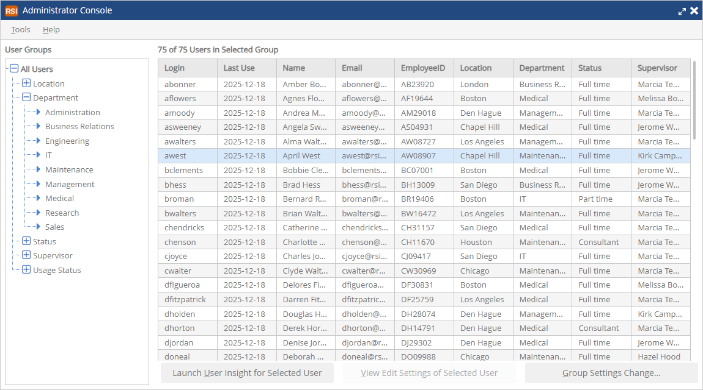
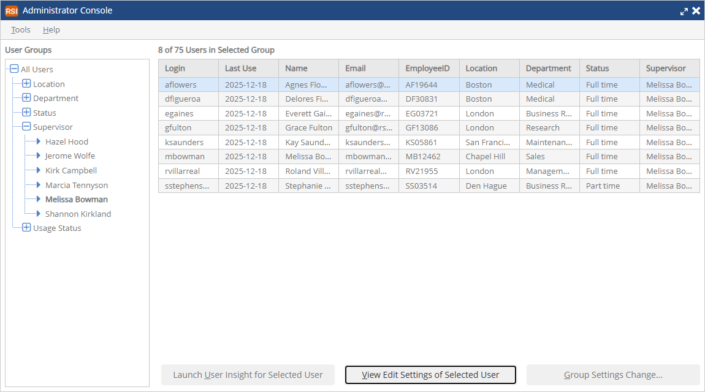
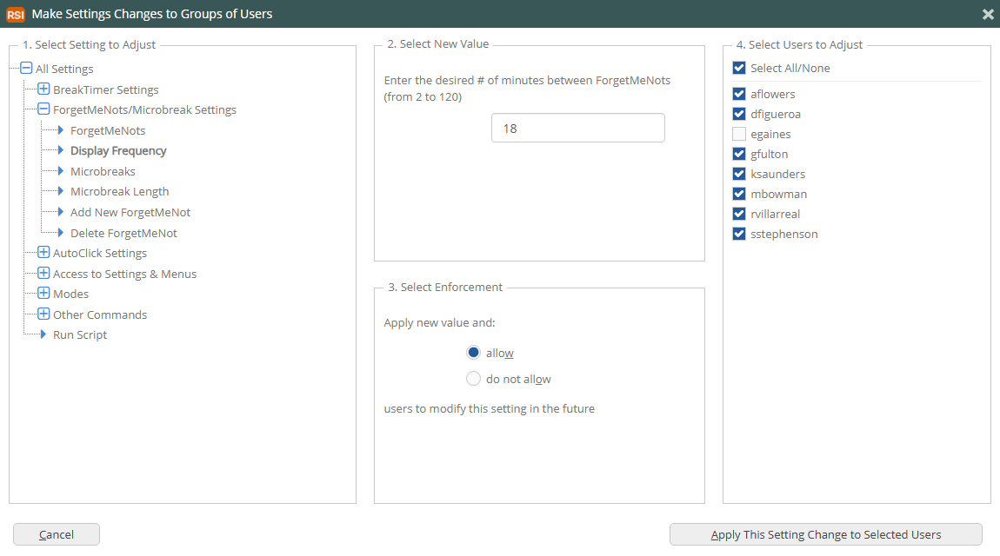
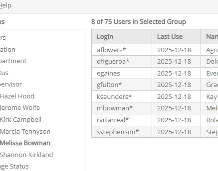
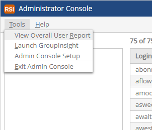
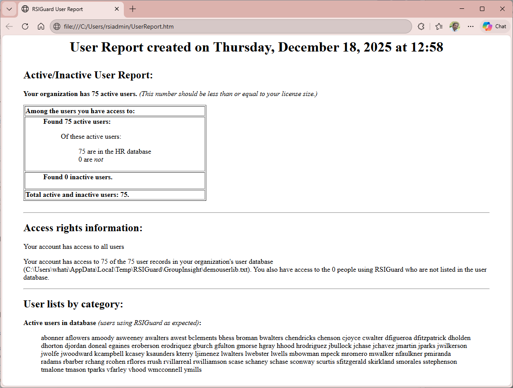

If your organization uses RSIGuard as a standalone product (without MyCority), you can have centralized management and reporting using the RSIGuard Administrator Desktop Tools.
This help content will introduce you to this administrator functionality. Its intended audience is health and safety staff, ergonomic evaluators, or others in your organization who will be responsible for creating reports from RSIGuard data and/or managing users.
If your organization has RSIGuard configured for networked data, and you wish to follow along with the examples, you will need to install the Administrator Tools Software. If you have not already done so, follow these steps:
Ensure the computer on which you are installing the RSIGuard Administrator Tools already has your organization's customized RSIGuard package installed.
Open the downloaded RSIGuardAdminTools-Install.msi to begin the installation process. If you receive any error messages, the most likely cause is that you don't have rights to install software on your computer. In this case, please ask your IT/helpdesk for assistance.
After the install program completes, RSIGuard Administrator Tools are installed on your computer and you can delete the RSIGuardAdminTools-Install.msi download.
If your organization restricts who can run RSIGuard's administration tools, make sure that you are on the list of allowed users and/or have the required password.
To launch the Administrator Console, make sure RSIGuard is running, and then, from the Windows Start menu, launch "Administrator Console".

Overview of the Administrator Console
The Administrator Console looks like:

On the left navigation bar, you can select which users to view on the right. Your navigation options will depend on what HR data your organization has made available to the Administrator Console. In the above example, All Users is selected, and the Department list has been expanded. Clicking on a particular department would change the view on the right to show only users in that department.
From the list of users on the right, you can select an individual user and either:
Click "Launch UserInsight for Selected User" to see their individual detailed RSIGuard statistics.
Click "View/Edit Settings of Selected User" to view their RSIGuard settings and/or make adjustments.
You can click "Group Settings Change" to apply a settings change to the entire list of users shown (or a subset of them). For example, here we have selected a particular supervisor, Melissa.

Eight employees report to Melissa. If you click on Group Settings Change, you'll have the option to apply a change to those 8 users.

In Step 1 we have selected to change the ForgetMeNot/Microbreak interval. In Step 2 we specified that it should be 18 minutes. In Step 3 we enable their ability to change the setting if they wish (if "do not allow" was selected, then the interval would be locked at 18 for these users). In Step 4, we specified that this change only applies to 7 of the 8 users.
After applying the setting and refreshing the window, you'll see an updated user list with *'s after their Login:

The *'s indicate that the setting adjustment is queued for the user. The * will go away for each user when the setting has been applied to them (the next time their RSIGuard checks for updates - usually within 24 hours).
Overall User Report
If you want to view your organization's RSIGuard utilization, you can click the Tools menu to access the Overall User Report.

The report will look like this:

Reporting Tools
RSIGuard contains two types of reporting functionality.
The first, called UserInsight Reports, is intended for use by individuals and ergonomic evaluators/medical professionals assisting individuals. Using the application UserInsight, you can view high-resolution, color-coded graphs that show an individual user's patterns at the computer and where they fall into higher risk categories.
The second, called GroupInsight Reports, is intended for use by managers and health & safety staff. GroupInsight reports provide insight into organizational risk, compliance and work patterns. GroupInsight also provides a convenient method to communicate with selected populations via email.